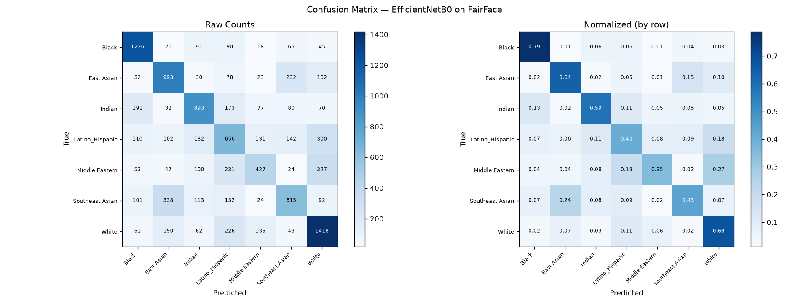

Analyzing Racial Bias in Facial Recognition
An EfficientNetB0 transfer-learning model trained on the balanced FairFace dataset — probing whether equal training data produces equal accuracy across racial groups.
Overview
Facial recognition systems are widely deployed but historically perform unevenly across racial groups. This project trains a from-scratch model on a dataset deliberately balanced across 7 racial groups, then measures whether that balance alone is enough to produce equal outcomes. The goal is not to classify race — it's to expose where and how accuracy diverges by group, mirroring the disparities documented in commercial systems reviewed by NIST (2019) and the Gender Shades study (2018).
Per-Class Performance
A single accuracy number hides everything that matters here. Hover any bar for the exact precision / recall / F1 for that group — notice the spread between the best and worst performing classes despite a perfectly balanced training set.
Intersectional Breakdown — Race × Gender
Race alone isn't the whole story. Splitting each group by gender surfaces gaps the per-class chart above hides entirely — most strikingly for Middle Eastern faces, where recall nearly doubles between genders.
Confusion Matrix
Each row is the true class, each column the model's prediction. Off-diagonal cells are errors — and the pattern of those errors is the interesting part. Look for asymmetry: does the model confuse group A for B as often as B for A?

Grad-CAM — Where the Model Looks
Accuracy tells us how much the model errs. Grad-CAM tells us where it looks when deciding. Click a group to see real validation examples — original on the left, attention heatmap on the right. Warm colors mark pixels that most increased the model's confidence.
Key Findings
Even with an exactly balanced training set, per-class F1 ranged from ~0.74 (Black) down to ~0.41 (Latino_Hispanic) and ~0.42 (Middle Eastern) — a ~33-point spread the headline accuracy number never reveals.
Middle Eastern faces were misclassified as White 27% of the time and as Latino_Hispanic 19% of the time — but the reverse confusions were far smaller. Southeast Asian leaked into East Asian 24% of the time. These one-directional error patterns are a form of bias the confusion matrix makes visible that overall accuracy cannot.
White had the highest self-recall (68%) and acted as something of an attractor for ambiguous faces from other groups — consistent with NIST's 2019 finding that commercial face recognition systems tend to perform best on the demographic most represented in typical training pipelines (even when, as here, the data itself was rebalanced).
Grad-CAM heatmaps mostly center on facial structure (eyes, nose, mouth) rather than background or edges — a good sign that the model isn't relying on an obvious shortcut like scene context. Some misclassified Middle Eastern and Latino_Hispanic examples show more diffuse, less confident attention, which tracks with their lower recall.
The race-only breakdown already understates the problem. Middle Eastern recall splits to 41% for men and just 23% for women — nearly double the gap. Race and gender bias aren't independent; they stack.
Training Dynamics
Validation accuracy and loss across both training phases. Phase 1 (frozen backbone) plateaus around epoch 9 — the dense head alone can only learn so much. Unfreezing the top 20 EfficientNet layers at epoch 31 produces an immediate, sustained jump that hadn't leveled off by the time training stopped.
Methodology
Two-phase transfer learning on EfficientNetB0 (ImageNet pretrained): Phase 1 trains a dense classification head with the backbone frozen; Phase 2 unfreezes the top 20 layers and fine-tunes at a 100× smaller learning rate. Trained locally on an RTX 4070 Ti via WSL2 with mixed-precision (fp16) compute. Originally built as a 2021 capstone using a 2-layer CNN from scratch on ~7,000 images — this version scales to the full ~108K-image FairFace dataset and adds per-class metrics and Grad-CAM analysis on top of raw accuracy.
Limitations & Caveats
This is a 7-way race classifier used as a bias-probing tool — not a face verification or identification system like the commercial products NIST and Gender Shades actually audited. The findings here are suggestive of the same underlying phenomenon, not a direct audit of a deployed recognition pipeline.
FairFace's own paper reports annotator agreement is lowest for Latino_Hispanic and Middle Eastern — exactly the two groups that score worst here. Some of what looks like "model bias" may partly be label ambiguity in categories that are inherently fuzzy social constructs, not biological ones.
Per-class validation counts range from ~700–1,700 images. The metrics above are point estimates from a single training run with no confidence intervals or repeated seeds — real, but their precision shouldn't be over-read.